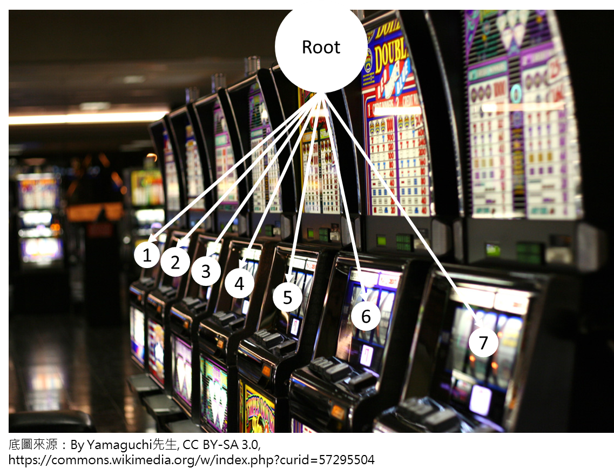

UCT (UCB applied to Trees) - Bandit Based Monte-Carlo Planning
UCT (UCB applied to Trees) 是由 “Bandit BasedMonte-Carlo Planning” 這篇論文所提出。回顧 MCTS (Monte Carlo Tree Search)模擬的四個階段，第一個階段是 selection，目標是選出要進行後續步驟的葉節點。選擇哪一個節點會影響到後面要取樣哪一個節點。
Selection 的重要性
我們做 MCTS 是為了要找出最逼近原本 Minimax 樹的 optimal 決策。由於運算資源的限制，我們不可能做無限多次的 MCTS 模擬（如果有無限的算力和記憶體那就直接暴力解整棵 Minimax 樹！也不用做 MCTS 了😂），因此選定一個好的 selection 方法非常重要，因為當樹在長的時候，如果能判斷哪個 child node 比較可能是 optimal 節點，我們就能投入較多運算資源在這些較有潛力的節點，避免浪費資源在那些比較沒有希望的節點，達到較有效率的運算。
舉例來說，如果有一個演算法能告訴我們每一層的 optimal 節點在所有的哪一半，那整顆樹長完我們能大約節省 $(1/2)^d$ 的空間及運算量（d 為樹的深度）。以下圖為例，假設淺藍色節點是較有潛力的節點，紅色節點為較不可能為 optimal 的節點，如果只搜尋淺藍色節點，每一層的 branching factor 能減少了一半。
多臂機問題
既然 select 很重要，那到底要怎麼選呢？這個選節點的問題是一種多臂機問題(Multi-armed Bandit Problem)，多臂機問題的「機台」對應樹搜尋的「節點」。想像一下你到了一家賭場，裡面有許多的拉霸機（吃角子老虎機）。每一台拉霸機都有自己的中獎機率但你不知道，請問你會怎麼決定拉哪一個機台？第一次拉哪一台？第二次呢？第三次？第四次？……後面你要選哪一台拉？你會依照過往經驗選？還是你會勇於探索新的機台？

以下探討問題時，均假設中獎的 reward 是 1，沒中獎的 reward 是 0，方便我們用 reward 的期望值估中獎機率。
Greedy algorithm?
挑選機台最簡單的方法大概是 greedy 吧！Greedy 指的是：總是選擇過去表現最好的機台。這樣的方式看似直覺，實際上卻可能出現大問題！
假設有兩台拉霸機 A 和 B，真正的中獎機率是分別為 0.7 和 0.3（你不知道）。你初來乍到，兩台各試一次，然後之後用 greedy 的方式選。如果你恰巧 A 沒中，B 卻中了，那會變成悲劇。你之後會一直選 B，即使後來 B 再也沒中獎過。根據 greedy 的概念，你會選過往表現最好的機台。B 過往中過獎，而 A 沒有；無論選了幾次，B 的過去獎勵平均始終大於零，比 A 的平均 = 0 還要大，因此你會覺得 B 比較好而一直選它，但其實 A 的中獎機率比較高，只是還沒被你探索出來！
從這個例子可以看出一味的憑過去經驗進行決策（exploitation）是不好的，應該加入適當的探索（exploration）避免錯失更好的選擇。
Epsilon greedy algorithm?
從 greedy algorithm 的例子可以知道探索十分重要，那我們換一種加入探索特性的演算法—epsilon greedy algorithm。預先設定一個機率 epsilon，有這個 epsilon 的機率會從全部機台選擇一個機台（exploration，探索）；另外的 1 - epsilon 機率直接選過去表現最好的（exploitation，利用）。
加了探索之後理論上效果會變好，但還有地方值得我們注意。想一想，假如我們已經把不同機台都實際拉過許多次，那我們還需要做多少的探索？
我們沿用上部分的機台。假設兩台各拉了一千次，A 機台中獎 703 次，B 機台中獎 299 次。我們能感受到 A 機台的中獎機率應該比 B 機台高上不少，那這個時候我們還需要再花錢去探索 B 機器嗎？（如果你是用 epsilon greedy algorithm，你做探索的機率還是一樣）
比較理想的情況應該是隨著總試驗次數變多，探索的比重應該要下降，因為試驗次數越多表示我們越有信心依照當前結果去判斷機器真正的期望值。
Exploitation vs Exploration
由 greedy algorithm 的範例可知探索與利用缺一不可；由 epsilon greedy algorithm 的範例我們了解到探索與利用的比例問題。探索與利用一直以來是個兩難問題，過度探索會浪費運算資源在不好的節點上，過度利用則會錯失最好的節點，因此適當的安排探索與利用十分重要。
以樹搜尋來說，一個良好的、能夠適當分配探索與利用比重的演算法能幫助我們更快速、更有效率找出可能是 optimal 的節點（真實期望值最高）。
UCB (Upper Confidence Bound)
UCB 是另一種選擇的方式。對於每個子節點，我們算出它的 UCB 值，之後選擇擁有最大 UCB 的子節點。UCB 由兩項組成，一項是平均 reward，另一項是幫助探索用的。
$i$：第 i 台機台。
$I_t$：第 t 次試驗要選擇哪一個機台。
$K$：機台總數量。
$T_i(t-1)$：前面全部 t-1 次試驗中，第 i 台機台被嘗試的次數。
$\bar{X}_{i,T_i(t-1)}$：第 i 台機台在前面全部 t-1 次試驗中的平均 reward。
UCT (UCB applied to trees)
終於進入我們的主軸—UCT。簡單來說，它就是把 UCB 用到樹搜尋上，許多數學性質沿襲自 UCB。我們可以簡單地把樹的節點想成機台。
跟 UCB 的式子幾乎一模一樣，主要差異是多一項超參數 $C_p$ 來控制探索比重。把 $C_p$ 設成 $\frac{1}{\sqrt{2}}$ 式子就會跟 UCB 相同。UCT 許多數學性質也延用自 UCB。
無論使用 Minimax、Alpha-Beta Pruning 或 MCTS 來搜尋，我們都會希望當投入的運算資源趨近無限，演算法要保證我們選得到 optimal 的選項（真實期望值最高的節點）。儘管 UCT 在實驗上的效果優異，我們還是需要從比較理論的角度了解它的數學性質。
圖說
我們用簡單的圖來呈現公式。假設有兩台機台：機台 1 和機台 2。圖中紅色虛線是平均 reward，加上探索項的值就變成了黑色實線。這個黑色實線代表的是 upper confidence bounds（就是 ucb）。以圖中的例子來看，機台 1 的黑色實線較高，因此用 UCT/UCB 的公式會選擇左邊的機台。
接下來把 $\mu$ 用綠色的線標上去。
$\mu$：該台機台的真實期望值（你不會知道的那個）
綠線可能出現的位置有兩種：
- 在黑色線下方（下圖左）
- 在黑色線上方（下圖右）
由於公式告訴我們要選黑線最高的機台，如果不幸出現上圖右的情況，我們可能會錯失右邊這個比較好的機台，所以會希望綠線最後都出現在黑線下方，也就是 upper confidence bound 要真的能 upper bound 真實期望值。上圖右這種不好的狀況發生的機率可以用 Hoeffding’s Inequality 來算出它發生的機率上界，後面會提到。在介紹 UCT 相關的數學性質以前先來看個動畫，讓我們對 UCT 更有感覺。
動畫 DEMO
假設有兩個節點，把它們想成是兩台拉霸機。
下圖為 GIF 檔，圓點虛線是 upper confidence bound；虛線是真實期望值；實線是當前的 reward 平均。
UCT/UCB 數學性質
Hoeffding’s Inequality
根據維基百科的描述：
從前兩式可得：
把變數換成我們用的形式。t 代入我們的 $sc_{t,s}$（它的 t 跟我們的 t 不一樣）。
我們前面已經有假設過我們討論的問題裡面的 reward 只會是 0 或 1，所以 $b_i = 1, a_i=0$。如果 reward 不在 0~1 區間內，要先轉成 0~1 的形式才有辦法符合接下來這些數學式子的條件。
可以得知，當總試驗次數越多，右邊這種狀況出現的機率就越低。當試驗次數趨於無限多次，右邊發生的機率就會趨於零。
The expected times of choosing a suboptimal action is bounded:
接下來我們提到的這些式子是論文原文裡提出的定理，證明的部分有興趣可以自行查閱相關資料，這裡主要闡釋這些定理的特性。
【Theorem 1】
若 i 為非 optimal 的機台，且 n>K 則：
從這個式子可以看到等式右邊分母的 $(\Delta_i/2)^2$，表示如果 $\Delta_i$ 愈小，即與 optimal 期望值愈接近，機台被選中次數的期望值上界就越高；相反，與 optimal 期望值差越多，被選中次數的期望值上界就越低。換句話說，越好的機台被選到的次數的期望值上界越高。
此外，我們可以觀察到等號右邊是由分子 $\ln n$ 所主導。所有 K 個機台裡面，那 K-1 個非 optimal 的節點被選中的次數上界都是 $\ln n$。全部試驗次數為 n，表示 optimal 機台被選中次數的期望值下界為 $n-\ln n$，當 $n\to\infty$，會趨於無限大。所以當我們的總試驗次數夠大時，我們能期望大多數的試驗都落在 optimal 的機台上。
The average reward will get closer to the optimal solution:
【Theorem 2】
式子告訴我們期望的平均 reward 和 optimal 的平均 reward 會隨著試驗次數越多越靠近。
等式右邊的 $|\delta_n^*|$ 會隨著 n 變大會趨於零，因為隨著試驗次數變多，每一層都會逐漸去選該層最好的機台。以下圖為例，B 節點的期望值一開始可能不會是 0.7，但隨著試驗次數變多，B 逐漸發現它下面 0.7 機率的那台比較好，之後經過 B 向下的搜尋都會漸漸集中在 0.7 那個機台，所以 B 的期望值也會慢慢靠近 0.7。根節點也會因為漸漸發現 B 的期望值比 A 好而花比較多試驗次數在 B，使得根節點的期望值也漸漸逼近 0.7。
等式右邊 Big-O 那一項則是 under 在 $O(\frac{\ln n}{n})$，也會隨著 n 變大趨進於 0。所以到最後等式右邊全部會趨於零，使得試驗的期望值趨於 optimal 的期望值。
The times we choose an action also has a lower bound:
【Theorem 3】
簡單估一下，如果試驗次數夠多，我們把每個機台的探索項維持在小於等於 1，也就是：$2C_p\sqrt{\frac{ln t}{s}}\le1$，簡單推一下可以得到 $s = T_i{(n)}\ge 4C_p^2 \ln t$。每個機台被選中的次數有一個 log 的 lower bound，有保證最少的探索量。
Choose the optimal action without exploration when t→inf:
【Theorem 5】

當總試驗次數夠大，第 t 次試驗只用利用項沒用探索項選到 optimal 的機率是 100%。這時候探索就比較不重要了，純靠 exploitation 就有能力選到最好的。呼應前面講到的 epsilon greedy algorithm，epsilon greedy algorithm 的探索力道保持一致，而 UCT 的探索在試驗次數夠多時影響力會下降。
其它
從前面幾點定理基本上就能了解到 UCT 的基本數學性質。論文還有提到一些其它的定理，有興趣可以自己翻閱。
Experiments
論文裡用 P-game 來做實驗，並與其它同時期或更以前的方法進行比較。

簡單來說，p-game 是一種手動造出來的 minimax tree，我們實驗前就知道它所有資訊。從圖可以看出 UCT 跟其它幾個演算法比起來表現最為亮眼。
Conclusion
“Bandit Based Monte-Carlo Planning” 這篇論文提出了一種新的蒙地卡羅搜尋的選擇方法：UCT。在論文的實驗中，UCT 表現地比其它的方法更好。
Reference
- Kocsis, Levente & Szepesvári, Csaba. (2006). Bandit Based Monte-Carlo Planning. Machine Learning: ECML. 2006. 282-293. 10.1007/11871842_29.
- P. Auer, N. Cesa-Bianchi, and P. Fischer. Finite time analysis of the multiarmed bandit problem. Machine Learning, 47(2-3):235–256, 2002.
- https://en.wikipedia.org/wiki/Hoeffding's_inequality